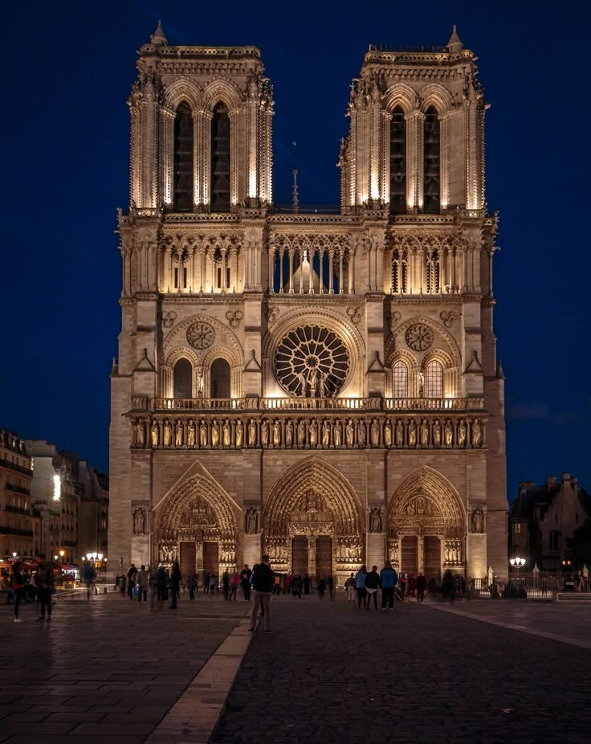

The Cologne Cathedral, Germany
The Cologne Cathedral, a masterpiece of High Gothic architecture located at Domkloster 4, 50667 Köln, Germany, stands as an enduring symbol of resilience and artistic ingenuity. Construction began on August 15, 1248, under Master Gerhard, and though the project spanned centuries—with primary phases occurring from 1248–1560 and 1842–1880—it remains an active site of restoration today. This monumental Catholic structure reaches a total height of 157 meters and a length of 144.5 meters, featuring two iconic spires and a majestic ensemble of 11 bells. Under the leadership of Archbishop Rainer Woelki and Provost Guido Assmann, the cathedral serves as a profound cultural touchstone; it survived the near-total destruction of its city during World War II, emerging as a poignant emblem of continuity. Its interior, illuminated by vast stained glass, creates a transformative atmosphere where history, faith, and architectural precision—now overseen by current architect Peter Füssenich—converge, making it a definitive example of human achievement in the face of time and conflict.
The Milan Cathedral (duomo di milano), Italy
The Milan Cathedral (Duomo di Milano), located at Piazza del Duomo, 20122 Milano, Italy, is a colossal masterpiece of Gothic architecture and a definitive icon of Italian cultural heritage. Construction began on 1386 under the direction of Archbishop Antonio da Saluzzo and Gian Galeazzo Visconti, initiating a monumental process that spanned nearly six centuries, with final details completed in 1965. This architectural wonder reaches a height of 108.5 meters at its highest point, crowned by the famous gilded copper statue of the Madonnina, and stretches 158 meters in length. Defined by its stunning white Candoglia marble façade, the cathedral features an astonishing forest of 135 spires and over 3,400 statues. As the seat of the Archbishop of Milan—currently Archbishop Mario Delpini—the cathedral functions as a vital religious and historical center for the Catholic Church. Throughout its long history, the project drew talent from across Europe, blending international Gothic and Renaissance influences into a unique structure that houses legendary relics like the Holy Nail. Today, the cathedral stands as the largest church in Italy and a symbol of Milanese identity, representing a permanent convergence of artistic evolution, faith, and the collective craftsmanship of generations.
Notre-Dame de Paris, France
The Notre-Dame Cathedral, situated at 6 Parvis Notre-Dame - Pl. Jean-Paul II, 75004 Paris, France, is one of the most iconic masterpieces of French Gothic architecture. Construction began in 1163 under the vision of Bishop Maurice de Sully, with legendary architects such as Jean de Chelles and Pierre de Montreuil contributing to its masterful structural evolution over the following centuries. The cathedral is world-renowned for its pioneering use of flying buttresses, intricate rose windows, and dramatic gargoyles, which define its imposing yet ethereal silhouette against the Parisian skyline. Beyond its architectural significance, Notre-Dame has served as the spiritual and historical heart of France for over 850 years, witnessing coronations, royal weddings, and the tumultuous shifts of French history. Despite surviving wars, revolutions, and the devastating fire of 2019, the cathedral remains a resilient emblem of human artistry and endurance, currently undergoing meticulous restoration to ensure its legacy as a cultural monument continues to inspire millions.

Ulm Minster (Ulm Münster), Germany
Ulm Minster, located at Münsterplatz 1, 89073 Ulm, Germany, is a stunning triumph of Gothic and Gothic Revival architecture and a primary landmark of the Evangelical Church in Germany. Construction on this monumental project began on June 30, 1377, and spanned over five centuries until its completion on May 31, 1890. The structure is world-renowned for its immense height, reaching 162 meters with a main steeple measuring 161.53 meters, which secured its place as the second-tallest church building in the world and the fourth-tallest structure globally upon its opening in 1890. Featuring three distinct spires, a capacity for 2,000 visitors, and an ensemble of 13 bells, the Minster serves as an enduring testament to medieval engineering and 19th-century craftsmanship, remaining a powerful and iconic fixture on the skyline of Baden-Württemberg.
Chartres Cathedral, France
The Chartres Cathedral, located at 16 Cloître Notre Dame, 28000 Chartres, France, is a premier masterpiece of High Gothic architecture and the esteemed seat of the Bishop of Chartres. Primarily constructed between 1194 and 1252 under the guidance of the legendary "Master of Chartres," the cathedral stands as a brilliant synthesis of Romanesque and French Gothic styles. Dedicated in honour of the Virgin Mary, the structure reaches a height of 113 meters and serves as one of the most significant pilgrimage sites in Europe. Located approximately 80 km southwest of Paris at coordinates 48°26′52″N 1°29′16″E, it is globally renowned for its exceptional preservation of medieval stained glass and its influential architectural design, which set the standard for the High Gothic era and remains a profound symbol of religious devotion and artistic heritage.
York Minster, England
York Minster, formally the Cathedral and Metropolitical Church of Saint Peter in York, is an illustrious Anglican cathedral located at Deangate, York YO1 7HH, United Kingdom. As one of the largest and most magnificent cathedrals in Northern Europe, it stands as a breathtaking showcase of English Gothic and Perpendicular Gothic architecture. While the site has been a center of Christian worship since its original opening in 637 AD, the current structure represents centuries of evolution and artistic mastery. Reaching a height of 72 meters, the Minster is internationally celebrated for its vast stained glass, notably the Great East Window, and its historical significance as the final resting place for notable figures such as Thomas of Bayeux and William Peckitt. Today, it serves as the heartbeat of York’s religious and cultural life, embodying a profound legacy of architectural beauty and historical continuity that draws visitors from across the globe.